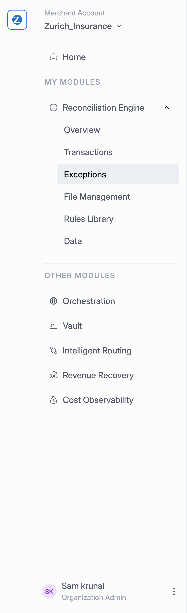
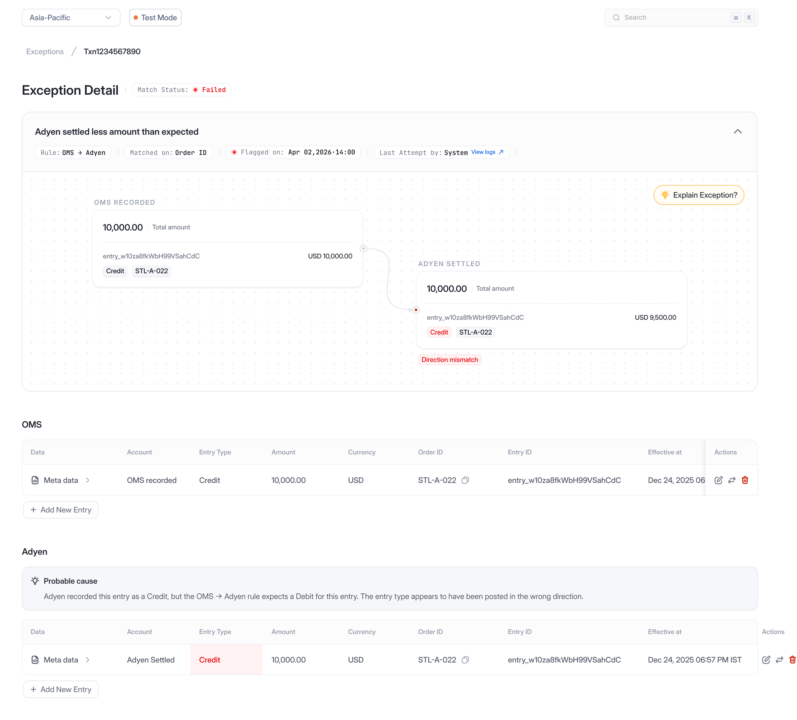
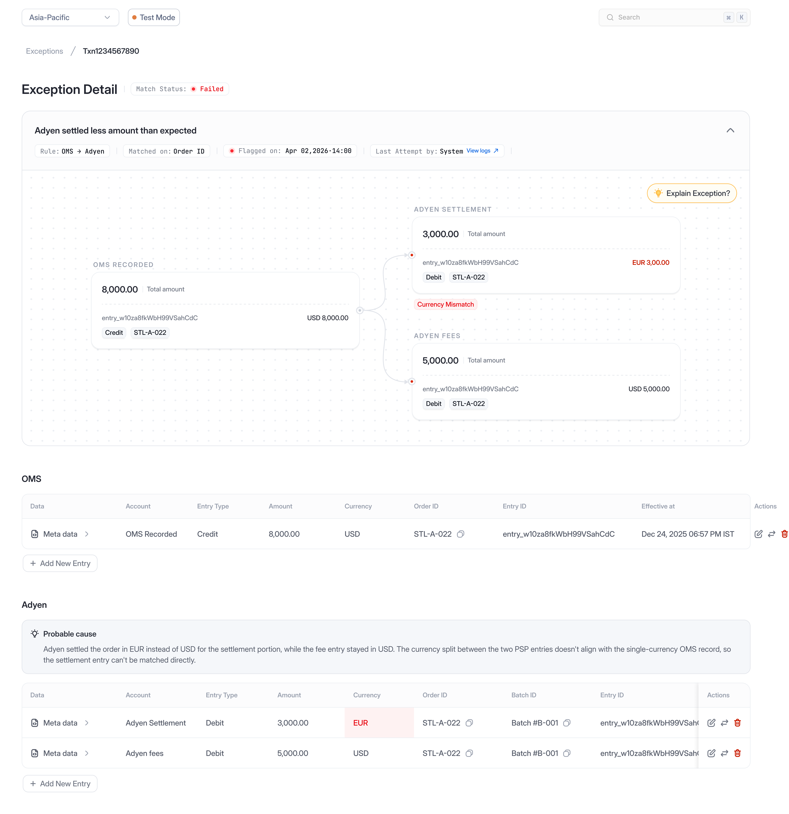
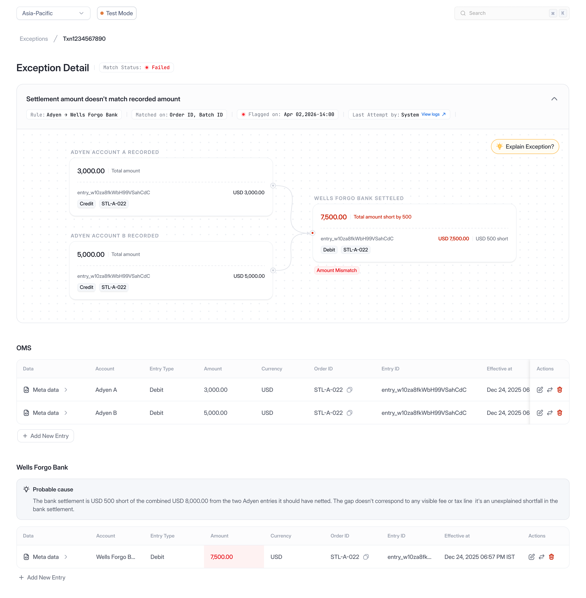
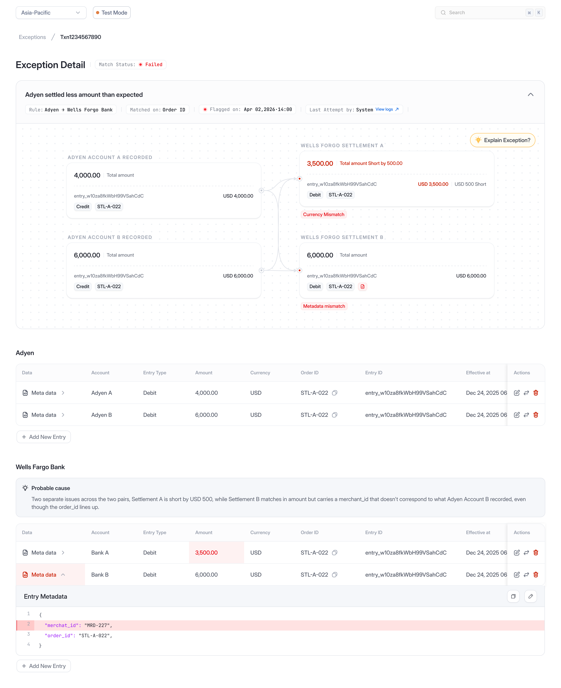
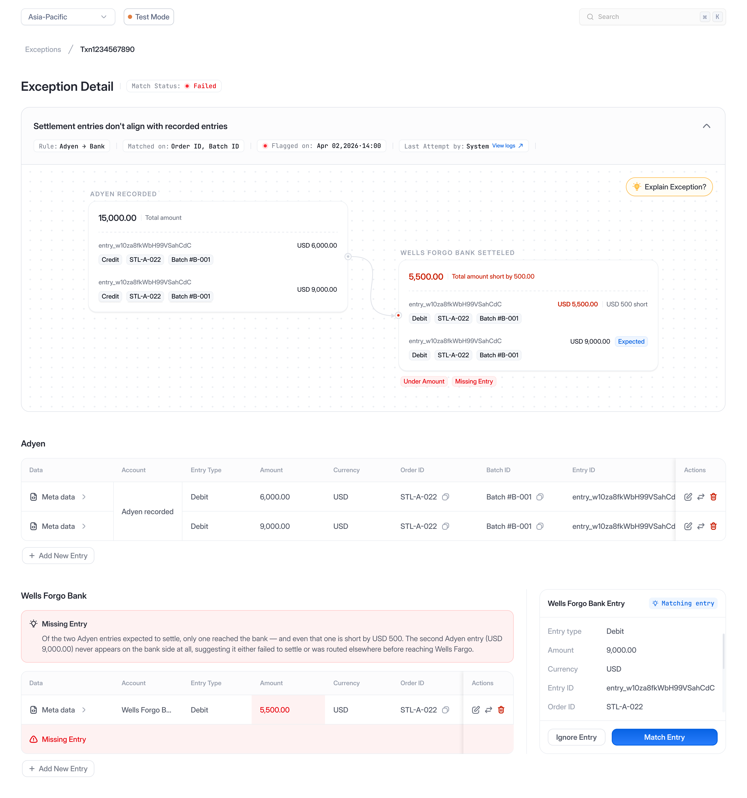

Reconciliation
- Product Designer
- Juspay Hyperswitch
- Exception Resolution

One transaction. Multiple versions of the truth.
When a customer makes a payment, merchants, payment providers, and banks each record their own version of the same transaction.
As transaction volumes grow, even small discrepancies become difficult to investigate at scale, so reconciliation solves this by comparing each system against another and verifying that every version tells the same story about where the money went.
Accounts are paired using a common identifier, such as an Order ID or Batch ID, and validated against a predefined rule set. Depending on how the transaction flows through each system, a single transaction may span multiple accounts and many underlying entries.
Sometimes the records don't agree.
When two records don't agree, an exception is created. That's where the investigation begins.
Although every exception may look similar on the surface, the reason behind them can be entirely different requiring different investigation and resolution paths.
One mismatch can hide many different stories.
The mismatch type only tells part of the story. Understanding how accounts and entries are connected is what determines how it's resolved.
Transactions don't always map one-to-one. A single order can split into multiple settlement entries, while several orders can eventually settle into one bank record. That means two exceptions with the same mismatch reason can have entirely different structures underneath.
Before they can act, analysts first need to reconstruct how those accounts and entries relate to one another.
The exception label tells you what failed, but not how the records relate underneath.
Analysts need to understand both layers before they can act:
- Who is being compared (Account level)
- What is being compared underneath (Entry level)
Why resolution slows down
- The exception label hides the structure beneath it.
- The same mismatch can require entirely different resolutions.
Analysts shouldn't have to rebuild the story every time.
Every exception already contained the information analysts needed to make a decision. It was simply buried across accounts, entries, relationships, and metadata.
Because analysts handle exceptions repeatedly, even small amounts of reconstruction effort compound quickly at scale.
Before resolving an exception, analysts answered the same questions every time:
- Which transaction is affected?
- Which accounts and entries are involved?
- What caused the mismatch?
- What needs to happen next?
Design principles
Every investigation was designed around two simple principles.
We simplified the path from investigation to resolution.
We structured the experience around a simple principle: understand the exception first, then resolve it.
One experience. Many structures
Regardless of how accounts and entries were connected underneath, analysts followed the same investigation experience, and the interface adapted to each topology while preserving a familiar workflow.






Make resolution obvious
Once the discrepancy was understood, the interface surfaced only the actions relevant to that exception, allowing analysts to resolve issues without leaving the investigation.
Edit an entry
Update incorrect values directly within the investigation.
Add a missing entry
Create the missing record and restore the expected relationship.
Swap the match
Move an entry to the transaction where it belongs.
Ignore an entry
Remove entries that shouldn't participate in reconciliation.